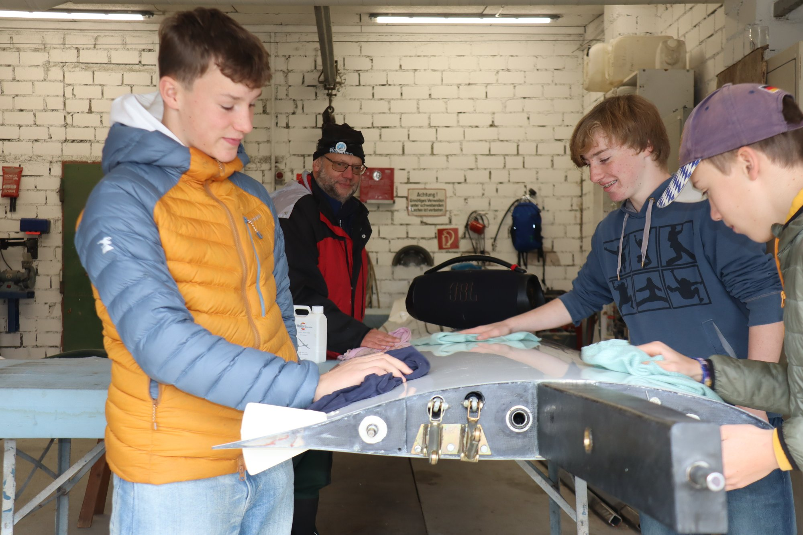
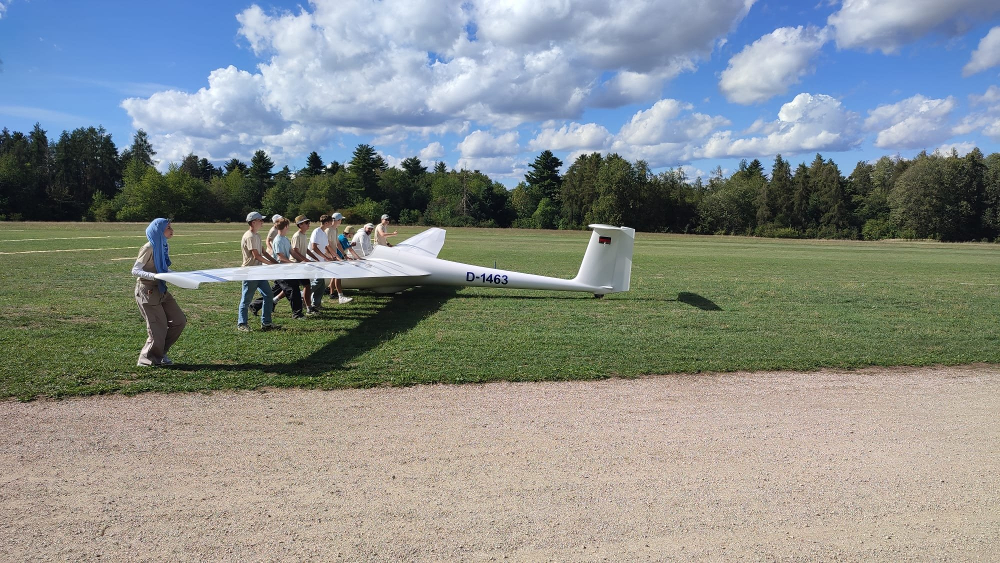

Jugend
Unsere Jugendgruppe ist für alle zwischen 14 und 27 Jahren. Mit 14 kann die Ausbildung beginnen, nach getaner Arbeit, gibt es pünktlich zum 16. Geburtstag den Segelflugschein.


Unsere Jugend:
Fliegen verbindet – und bei uns wird daraus eine richtig starke Gemeinschaft! Ab 13 Jahren kann jeder mitmachen, der sich für die Fliegerei begeistert. Unsere Jugendgruppe ist bunt gemischt und reicht von Jugendlichen bis hin zu jungen Erwachsenen. Gemeinsam wird geflogen, gelacht und angepackt. Wer gerade nicht selbst in der Luft ist, unterstützt die anderen am Boden und sorgt dafür, dass möglichst viele in den Genuss des Fliegens kommen. Und wenn der Flugbetrieb für den Tag beendet ist, wird gemeinsam der Grill angeworfen und der Abend gemütlich ausgeklungen.
Ein besonderes Highlight sind unsere Fluglager. Mindestens einmal im Jahr geht es für eine Woche oder länger an unseren oder einen anderen Flugplatz. Dort wird gemeinsam gezeltet, geflogen und die Zeit miteinander verbracht. Wenn das Wetter mitspielt, steht sogar jeden Tag ein Flug auf dem Programm. So entstehen Erlebnisse und Freundschaften, die weit über den Flugplatz hinausgehen.
Auch außerhalb der Fluglager ist einiges geboten: Wir organisieren Veranstaltungen wie das Jugendvergleichsfliegen oder das Landesjugendtreffen und treffen uns zu gemeinsamen Aktionen. Kleine Partys zum Start oder Abschluss der Flugsaison dürfen natürlich ebenfalls nicht fehlen. Und wenn es im Winter draußen zu kalt zum Fliegen wird, treffen wir uns zur Wartung unserer Flugzeuge und halten die Gemeinschaft auch am Boden aufrecht.
Manche nennen es Digital Detox. Wir nennen es Fliegen, gemeinsam etwas erleben, anpacken und feiern! Denn bei uns entstehen nicht nur Flugstunden, sondern auch Freundschaften und Erinnerungen, die bleiben.

Was wir machen
| Wettbewerbe | Streckenflug-Wettbewerbe, Jugendvergleichsfliegen, LIMA-Leistungslehrgang |
|---|---|
| Gemeinsam unterwegs | Ob zu Besuch bei anderen Flugplätzen, Museen oder zum Feiern, bei uns ist immer was geboten! |
| Für den Ort | Jährlich findet bei uns die Kinder- und Jugendfreizeit Obertraubling statt |
Jugendleitung
| 1. Jugendleiter | Jonas Altschäffel |
|---|---|
| 2. Jugendleiter | Mick Scherrieble |
| Kontakt | jugend@luftsportverein-regensburg.de |